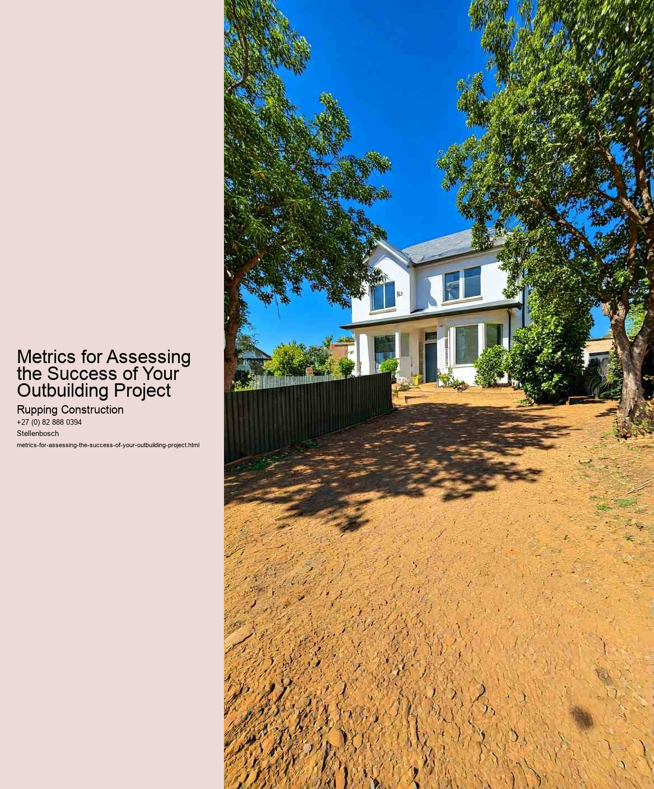

Key Performance Indicators (KPIs) for Outbuilding Projects are essential tools for measuring the success and effectiveness of these endeavors. Outbuilding projects, which can include anything from garden sheds and workshops to more complex structures like guest houses or studios, require careful planning, execution, and evaluation. Establishing clear KPIs helps project managers and stakeholders assess whether the project meets its intended goals and delivers value.
One of the primary KPIs for outbuilding projects is budget adherence. Tracking expenses against the initial budget allows project managers to determine if the project is financially viable. Staying within budget is crucial, as cost overruns can jeopardize project success and lead to resource reallocations or project delays. Regular financial assessments can help identify potential issues early on, enabling timely adjustments to keep the project on track.
Another critical KPI is the timeline adherence. Outbuilding projects often come with specific deadlines, and meeting these timelines is vital for client satisfaction and overall project success. By measuring how closely the project adheres to its schedule, stakeholders can identify bottlenecks and areas where efficiency can be improved. Delays can lead to increased costs and diminished trust among clients and contractors, making timeline tracking a crucial element of project evaluation.
Quality of work is also an important KPI. This can be assessed through inspections, client feedback, and adherence to building codes and regulations. High-quality workmanship ensures that the outbuilding is not only aesthetically pleasing but also functional and durable. Establishing quality benchmarks at various stages of the project allows for ongoing assessment and adjustment, ultimately leading to a better end result.
Client satisfaction is another key performance indicator that should not be overlooked. Surveys or feedback sessions conducted at the projects completion can provide valuable insights into the clients experience. Understanding how well the project met the client's needs and expectations can inform future projects and highlight areas for improvement. Satisfied clients are more likely to recommend services and return for future projects, making this KPI crucial for long-term business success.
Finally, a less tangible but equally important KPI is the overall impact of the outbuilding on the property and its value. Many homeowners invest in outbuildings to enhance their living space or increase property value. Measuring the impact on property value, usability, and functionality can provide a holistic view of the projects success. This can involve appraisals, market comparisons, and assessing the enjoyment and utility the new space provides to the homeowners.
In conclusion, effective KPIs for outbuilding projects encompass a range of metrics, including budget adherence, timeline adherence, quality of work, client satisfaction, and the overall impact on property value. By focusing on these indicators, project managers can ensure that outbuilding projects not only meet their objectives but also bring lasting benefits to clients and enhance the overall value of the property. Establishing and monitoring these KPIs throughout the project lifecycle is essential for achieving success and fostering a positive reputation in the industry.
Budget adherence is a critical metric for assessing the success of any project, and this is especially true for outbuilding projects, such as garages, sheds, or small workshops. These projects often require careful financial planning and management, as they can quickly escalate in cost if not monitored closely. Tracking budget adherence not only helps ensure that the project remains financially viable but also serves as a reflection of project management efficiency.
At the outset of any outbuilding project, a detailed budget should be established, outlining anticipated costs for materials, labor, permits, and unforeseen expenses. This budget acts as a roadmap, guiding the project from inception to completion. However, the real challenge lies in sticking to this budget throughout the construction process. Factors such as fluctuating material prices, changes in design, or unexpected site conditions can all impact financial projections. Thus, regular monitoring and adjustments are crucial.
To effectively track budget adherence, project managers should implement a system for ongoing financial reporting. This involves comparing actual expenses against the projected budget at regular intervals. By doing so, any discrepancies can be identified early, allowing for timely corrective actions. For instance, if material costs are higher than anticipated, the project manager might decide to source alternative materials or reallocate funds from less critical areas of the budget.
Moreover, budget adherence fosters accountability within the project team. When everyone understands the financial constraints, they are more likely to make decisions that align with the budgetary goals. This collective awareness promotes a culture of responsibility and resourcefulness, encouraging team members to seek cost-effective solutions without compromising quality.
Another significant aspect of tracking budget adherence is the impact it has on stakeholder confidence. For clients or investors, seeing that a project is being managed within its financial limits can enhance trust in the project team. Conversely, budget overruns can lead to dissatisfaction and a loss of credibility. Therefore, maintaining budget adherence is not just about numbers; it's about building and preserving relationships.
Finally, the lessons learned from budget adherence can be invaluable for future projects. By analyzing the successes and challenges of budget management in an outbuilding project, teams can refine their processes and improve their forecasting accuracy. This continuous improvement cycle ultimately leads to better planning and execution in subsequent projects.
In summary, budget adherence is an essential metric in assessing the success of an outbuilding project. It involves meticulous planning, regular monitoring, and a commitment to financial discipline. By prioritizing budget adherence, project teams can not only ensure the completion of their projects within financial constraints but also cultivate trust and accountability, paving the way for future successes.
Time management is a critical element in ensuring the success of any project, including an outbuilding project. When it comes to meeting deadlines, effective time management can be the difference between a project that runs smoothly and one that faces numerous challenges. As homeowners or project managers embark on the journey of constructing an outbuilding, understanding the metrics for assessing success becomes essential.
One of the primary metrics for assessing success in an outbuilding project is the ability to meet established deadlines. This involves setting realistic timelines for each phase of the project, from planning and design to construction and final inspection. It is important to break down the project into manageable tasks, assigning specific timeframes for each. By doing so, project managers can create a roadmap that not only helps in tracking progress but also allows for the identification of potential bottlenecks early on.
Another important metric is the adherence to the project budget. Staying within financial constraints while meeting deadlines requires careful planning and resource allocation. This means continuously monitoring expenses and making adjustments as necessary to prevent cost overruns. When deadlines are met without exceeding the budget, it is a strong indicator of effective time management and overall project success.
Quality is another critical metric to consider. Meeting project deadlines should not come at the expense of quality workmanship. Therefore, it is essential to establish quality standards and conduct regular inspections throughout the project. This ensures that the outbuilding not only meets timelines but also fulfills the desired specifications and standards. A project that meets deadlines but falls short on quality may ultimately fail to satisfy the clients expectations.
Communication also plays a vital role in time management. Regular updates and open lines of communication among team members, contractors, and clients can help prevent misunderstandings and keep everyone aligned with the project goals. By fostering a collaborative environment, project managers can easily address issues as they arise, ensuring that timelines remain intact.
Lastly, the ability to adapt to unforeseen circumstances is a key metric in assessing project success. Delays can occur due to weather, material shortages, or unexpected site conditions. Successful time management involves having contingency plans in place and being flexible enough to adjust schedules while still aiming to meet overall project deadlines.
In conclusion, time management is a fundamental aspect of achieving success in an outbuilding project. By focusing on metrics such as adherence to timelines, budget constraints, quality of work, effective communication, and adaptability, project managers can enhance their chances of completing the project on time and to the satisfaction of all stakeholders involved. Ultimately, mastering time management not only leads to the successful completion of an outbuilding but also builds a foundation for future projects.
When embarking on an outbuilding project, the quality of work stands as a cornerstone of success. This encompasses not just the craftsmanship involved but also the materials used throughout the construction process. To ensure that your outbuilding not only meets aesthetic and functional expectations but also stands the test of time, it is crucial to assess these two interconnected components.
Craftsmanship refers to the skill and artistry applied during the building process. It is about the attention to detail, the precision in measurements, and the ability to execute a vision with skillful hands. A well-crafted outbuilding showcases clean lines, sturdy joints, and thoughtful design elements that enhance its overall functionality and appearance. When assessing craftsmanship, consider factors such as the quality of finishes, the alignment of structural components, and the overall durability of the construction. A skilled craftsman will ensure that each element is not only visually appealing but also structurally sound, minimizing the risk of future problems.
Equally important is the selection of materials. The longevity and performance of your outbuilding largely depend on the quality of materials chosen. Using high-grade wood, durable roofing materials, and energy-efficient insulation can make a significant difference in the outbuildings resilience against weather conditions and wear over time. When selecting materials, consider their suitability for the environment in which your outbuilding will reside. For instance, wood treated for moisture resistance may be necessary in humid areas, while materials that reflect heat might be preferable in hotter climates.
To effectively gauge the quality of work in your outbuilding project, establish metrics that can help you evaluate both craftsmanship and materials. These metrics may include the following:
Durability Tests: Assess materials based on their resistance to wear, decay, and environmental factors. This could involve testing the weather resistance of roofing materials or the tensile strength of structural elements.
Aesthetic Evaluation: Conduct visual inspections to determine the level of detail and precision in craftsmanship. Look for uniformity in finishes, the absence of blemishes, and the overall harmony of design elements.
Functional Performance: Evaluate how well the outbuilding meets its intended purpose. Consider aspects such as insulation effectiveness, structural integrity during adverse weather, and ease of use in everyday scenarios.
Feedback from Professionals: Consulting with architects, builders, or inspectors can provide invaluable insights into the quality of work. Their expertise can help identify areas that may require improvement or adjustment.
Longevity Assessments: Monitor the outbuilding over time to see how well it holds up against the elements. Regular maintenance checks can help identify potential issues before they become major problems.
In conclusion, the quality of work in your outbuilding project hinges on meticulous craftsmanship and the careful selection of materials. By establishing clear metrics for assessing these aspects, you can ensure that your investment not only meets your immediate needs but also provides lasting value for years to come. A well-executed outbuilding will not only enhance your property but also stand as a testament to the dedication and skill involved in its creation.
Checklist for Compliance in Outbuilding Construction Projects
Checklist for Compliance in Outbuilding Construction Projects